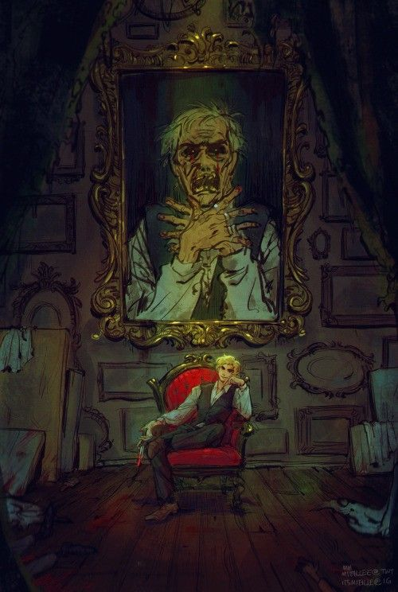
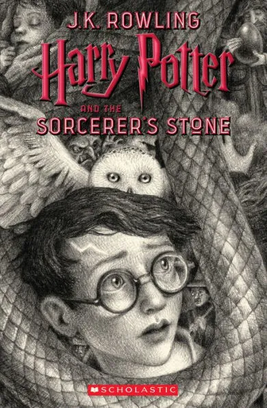
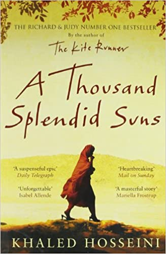

The Picture of Dorian Gray
Oscar Wilde’s only novel is the dreamlike story of a young man who sells his soul for eternal youth and beauty. In this celebrated work Wilde forged a devastating portrait of the effects of evil and debauchery on a young aesthete in late-19th-century England. Combining elements of the Gothic horror novel and decadent French fiction, the book centers on a striking premise: As Dorian Gray sinks into a life of crime and gross sensuality, his body retains perfect youth and vigor while his recently painted portrait grows day by day into a hideous record of evil, which he must keep hidden from the world.
The Book Thief

DON’T MISS BRIDGE OF CLAY, MARKUS ZUSAK’S FIRST NOVEL SINCE THE BOOK THIEF.
When Death has a story to tell, you listen. It is 1939. Nazi Germany. The country is holding its breath. Death has never been busier, and will become busier still. Liesel Meminger is a foster girl living outside of Munich, who scratches out a meager existence for herself by stealing when she encounters something she can’t resist–books. With the help of her accordion-playing foster father, she learns to read and shares her stolen books with her neighbors during bombing raids as well as with the Jewish man hidden in her basement.
Harry Potter and the Sorcerer's Stone
Harry Potter and the Sorcerer's Stone is the first novel in the Harry Potter series written by J.K. Rowling.
Harry Potter has no idea how famous he is. That's because he's being raised by his miserable aunt and uncle who are terrified Harry will learn that he's really a wizard, just as his parents were. But everything changes when Harry is summoned to attend an infamous school for wizards, and he begins to discover some clues about his illustrious birthright.
A Thousand Splendid Suns
Mariam is only fifteen when she is sent to Kabul to marry Rasheed. Nearly two decades later, a friendship grows between Mariam and a local teenager, Laila, as strong as the ties between mother and daughter.
When the Taliban take over, life becomes a desperate struggle against starvation, brutality and fear. Yet love can move a person to act in unexpected ways, and lead them to overcome the most daunting obstacles with a startling heroism.